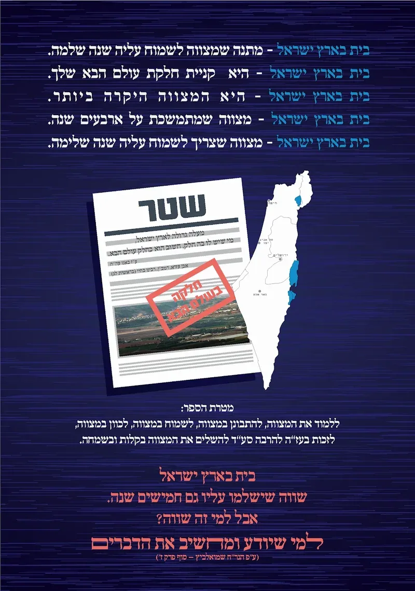

מה נלמד בחוברת?
את הנושא הזה אני מאוד רוצה להכניס לציבור בני התורה
להבין על איזה מצווה מדובר כאן?
הרי לא נוסף שום דבר לארץ ישראל
היה אצל יהודי ונשאר אצל יהודי.
להגיד לשם יחוד...
ולא להבין בכלל איזה מצווה עושים
זה מצווה מאוד חלשה....
וגם ברגש הלב לא מרגישים שום שמחה
וכבר כתב החזו"א שעיקר שכר המצווה הוא על השמחה בה.
צריך - לעורר את המחשבה של האברכים להבין
שהם נגשים לפרויקט גדול בחיים
משקיעים המון מאמצים גשמיים
והאם קצת משקעים בללמוד את הסוגיה
ויש כאן סוגיה נפלאה...
בס״ד לכבוד ארגון 'הקול החמישי' שלום וברכה! קנינו אצלכם את הספר 'בית ראובן' – המדריך לקנית בית בשמחה. ובאמת כל מסע קנית הבית הפך לשמחה אחת גדולה. מהרגע שלמדנו על חשיבות קנית בית בכסף מלא, כבר לא הרגשנו כל רגע שאנחנו חוסכים מפיתנו בשביל בית, אלא נהנו מכל פעם שזכינו לשים כסף בקופת ארץ ישראל שלנו. שהלכנו לראות דירות התרגשנו ממש, הרי אנחנו עכשיו קונים חלקה לנצח נצחים – וכי דבר קל הוא. בשעה שהגיע השעה לחתום את החוזה, בעלי היה נרגש עד מאוד, הוא לבש בגדי שבת (קפוטה ושטריימל), השכנים התלחשו בינהם, האם הם מארסים את ביתם הלילה? אכן כן, התארסנו באותו לילה עם ארץ ישראל (החתונה תהיה בעז"ה כאשר נכנס לדירה). מרוב שמחה וחדווה, הכל התנהל מתוך שמחה של מצווה, ומיד לאחר חתימת החוזה שתינו לחיים, ופרצנו בשירת עוד ישמע בערי יהודה... קול אומרים הודו (הקול החמישי של הארגון שלכם). היה לנו מזומן רק חצי מהתשלום על הדירה, וחשבנו לקחת משכנתא, אבל כמו שכתבת שאוהבים את ארץ ישראל, אז כל היסורים נעלמים, כך ממש היה אצלנו, חמי שיחי' אמר שיש אצלו כסף ששוכב ואין לו צורך כרגע, כך שנוכל להלוות ממנו את החצי השני של התשלום על הדירה, ובעז"ה נחזיר לו בקרוב. אני מברכת אתכם, שתזכו לתת לכל עם ישראל את הספר החשוב הזה, ספר שהופך את כל מסע הקניה למסע של מצווה שמחה וחיבת ארץ נחלת ה'. בברכה טובה אברמוביץ מכתב זה נכתב על ידינו, והוא מתאר באמת את מה שחווים שנכנסים ללימוד אמיתי של הספר. |